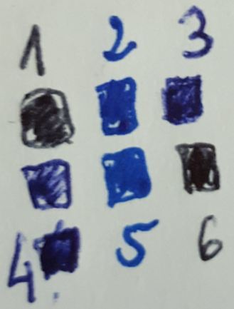
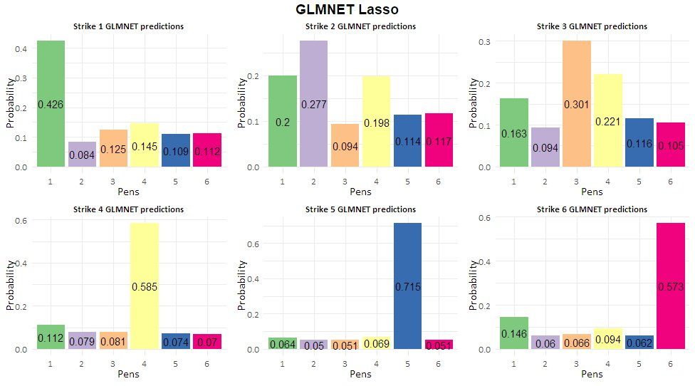

Report
Last updated: 2022-01-12
Checks: 7 0
Knit directory: PIB_workflowr/data/
This reproducible R Markdown analysis was created with workflowr (version 1.6.2). The Checks tab describes the reproducibility checks that were applied when the results were created. The Past versions tab lists the development history.
Great! Since the R Markdown file has been committed to the Git repository, you know the exact version of the code that produced these results.
Great job! The global environment was empty. Objects defined in the global environment can affect the analysis in your R Markdown file in unknown ways. For reproduciblity it’s best to always run the code in an empty environment.
The command set.seed(20210909) was run prior to running the code in the R Markdown file. Setting a seed ensures that any results that rely on randomness, e.g. subsampling or permutations, are reproducible.
Great job! Recording the operating system, R version, and package versions is critical for reproducibility.
Nice! There were no cached chunks for this analysis, so you can be confident that you successfully produced the results during this run.
Great job! Using relative paths to the files within your workflowr project makes it easier to run your code on other machines.
Great! You are using Git for version control. Tracking code development and connecting the code version to the results is critical for reproducibility.
The results in this page were generated with repository version 58281c7. See the Past versions tab to see a history of the changes made to the R Markdown and HTML files.
Note that you need to be careful to ensure that all relevant files for the analysis have been committed to Git prior to generating the results (you can use wflow_publish or wflow_git_commit). workflowr only checks the R Markdown file, but you know if there are other scripts or data files that it depends on. Below is the status of the Git repository when the results were generated:
Ignored files:
Ignored: .Rhistory
Ignored: .Rproj.user/
Ignored: analysis/.Rhistory
Untracked files:
Untracked: data/190910,01h50_II initials signature page 3.txt
Untracked: data/190910,01h50_III initials signature page 3.txt
Untracked: data/190910,01h50_SFsignature page 3.txt
Untracked: data/190910,21h19_II initials page 1.txt
Untracked: data/190910,21h19_III initials page 1.txt
Untracked: data/190910,21h19_SF initials page 1.txt
Untracked: data/190910,23h44_II initials page 2.txt
Untracked: data/190910,23h44_III initials page 2.txt
Untracked: data/190910,23h44_SF initials page 2.txt
Untracked: data/CONTRACT REGION OF INTERESTED EXPORTS/
Untracked: data/Full square 1 underneat number 1.txt
Untracked: data/Full square 1 underneat number 2.txt
Untracked: data/Full square 2 underneat number 1.txt
Untracked: data/Full square beside number 4.txt
Untracked: data/Full square underneat number 3.txt
Untracked: data/II full square ink under number 2.txt
Untracked: data/II full square ink under number 3.txt
Untracked: data/II square ink under number 1_ROI1.txt
Untracked: data/II square ink under number 1_ROI2.txt
Untracked: data/II square ink under number 1_ROI3.txt
Untracked: data/INK SQUARE ANALYSIS (TRAINING SET)-roi EXPORTS/
Untracked: data/STRIKES ANALYSIS (I TEST SET)-ROI EXPORTS/
Untracked: data/filenames.tsv
Untracked: data/full_data.rds
Untracked: data/site_libs/
Untracked: data/square ink above number 5_ROI1.txt
Untracked: data/square ink above number 5_ROI2.txt
Untracked: data/square ink above number 5_ROI3.txt
Untracked: data/square ink above number 6_ROI1.txt
Untracked: data/square ink above number 6_ROI2.txt
Untracked: data/square ink above number 6_ROI3.txt
Untracked: data/square ink beside number 4_ROI1.txt
Untracked: data/square ink beside number 4_ROI2.txt
Untracked: data/square ink beside number 4_ROI3.txt
Untracked: data/square ink under number 1_ROI1.txt
Untracked: data/square ink under number 1_ROI2.txt
Untracked: data/square ink under number 1_ROI3.txt
Untracked: data/square ink under number 2_ROI1.txt
Untracked: data/square ink under number 2_ROI2.txt
Untracked: data/square ink under number 2_ROI3.txt
Untracked: data/square ink under number 3_ROI1.txt
Untracked: data/square ink under number 3_ROI2.txt
Untracked: data/square ink under number 3_ROI3.txt
Untracked: data/squares analysis_number 2.txt
Untracked: data/squares analysis_number 3.txt
Untracked: data/squares analysis_number 4.txt
Untracked: data/squares analysis_number1.txt
Untracked: data/squares_analysis_number 2.txt
Untracked: data/squares_analysis_number 5.txt
Untracked: data/squares_analysis_number 6.txt
Untracked: data/strike 1.txt
Untracked: data/strike 2.txt
Untracked: data/strike 3.txt
Untracked: data/strike 4.txt
Untracked: data/strike 5.txt
Untracked: data/strike 6.txt
Untracked: full_data.rds
Untracked: wrangling.RData
Unstaged changes:
Modified: PIB_workflowr.Rproj
Deleted: analysis/Data Wrangling.Rmd
Deleted: analysis/Visualizations.Rmd
Deleted: analysis/Visualizations.Rmd.Rmd
Modified: data/wrangling.RData
Note that any generated files, e.g. HTML, png, CSS, etc., are not included in this status report because it is ok for generated content to have uncommitted changes.
These are the previous versions of the repository in which changes were made to the R Markdown (analysis/Report.Rmd) and HTML (docs/Report.html) files. If you’ve configured a remote Git repository (see ?wflow_git_remote), click on the hyperlinks in the table below to view the files as they were in that past version.
| File | Version | Author | Date | Message |
|---|---|---|---|---|
| Rmd | 58281c7 | marcsole96 | 2022-01-12 | stuff |
| html | c5d2645 | marcsole96 | 2021-12-22 | Build site. |
| Rmd | 9907c95 | marcsole96 | 2021-12-22 | trying again |
| html | be7169a | marcsole96 | 2021-12-22 | Build site. |
| Rmd | 4427018 | marcsole96 | 2021-12-22 | updating all |
| html | 7658a64 | marcsole96 | 2021-12-22 | Build site. |
| Rmd | 197ef5d | marcsole96 | 2021-12-22 | updating all |
| html | ed3ca9c | marcsole96 | 2021-12-22 | Build site. |
| Rmd | 2fe0c32 | marcsole96 | 2021-12-22 | updating all |
| html | ff3c5eb | marcsole96 | 2021-12-14 | Build site. |
| Rmd | 8fc4091 | marcsole96 | 2021-12-14 | Publish the initial files for myproject |
| html | 8690bd0 | marcsole96 | 2021-11-30 | Build site. |
| Rmd | fb9c9b7 | marcsole96 | 2021-11-30 | added report file |
This file is intended to serve as the final report for the project. In here the most important aspects will be written down, with references to the other .rmd files when needed. In other words, this is a summarized version of what has been done.
The student should be able to explain the methods used for the analysis of the data.
The student should be able to discuss the results of the analysis.
More specifically the student should be able to analyse the data provided in order to:
On the squares dataset: determine the pens used for each strike and the “1-6” writing.
On the contract dataset: identify if there is contract manipulation, on which page and which pen was used, identify the ions that indicate manipulation, and identify which of the 5 pens used in the squares were used for the initials and signatures of the documents.
Introduction
The student should be able to explain the theoretical background of the project
The fusion of criminology and machine learning is a fascinating field. Using machine learning models that can identify and discriminate between samples can be really useful in criminal cases where the “by hand” approach is tedious and prone to failure. The principal objective of this project is to use several machine learning techniques in order to identify possible forgery on a contract from a real crime scene.
To do so a machine learning model capable of distinguishing between different types of pens given an input mass spectrometry score of ink features was developed. Other analysis on the data were done as well and it was concluded that our model is efficient when it comes to identifying pens similar to the given test/train data and that the contract of interest was written in other pens. Because of that, unsupervised approaches were used to identify the possible forgery.
Methodology
Basic Idea
Data from the ink of several pens was provided as the result of mass spectrometry analysis on the ink samples.
Mass spectrometry is an analytic technique by which chemical substances are identified by the sorting of gaseous ions in electric and magnetic fields according to their mass-to-charge ratios. Encyclopædia Britannica (2021)
The structure of the data I worked on is the output from such spectrometry and it looks as follows:
The first column gives the values of the frequency in the spectrometry (mz) and the second one gives the intensity the mass spectrometer read at that frequency.
The above plot shows what each sample looks like coming from the mass spectrometer. The idea is that different inks will have different compounds and thus will display different peaks. A machine learning model could be thus built in order to identify which pattern of peaks would correspond to which type of ink and given a sample predict the most likely pen it would have come from. And if this model is trained well it could be used to identify possible forgery in documents by identifying if an ink used is different from the rest.
Data description
The training data for the models consisted on the mass spectrometry information obtained from the following samples:

In this sample six different pens were used:
Black ballpoint pen ink/ brand: BIC
Blue gel pen/ brand: Mitsubishi Pencil Uni-ball Signo 0.5
Blue ballpoint pen ink/ brand: white label (pen from Poland)
Blue ballpoint pen ink/ brand: OfficeCover Astro 1.0
Blue gel pen/ brand: Mitsubishi Pencil Uni-ball Signo 0.7
Black ballpoint pen ink/ brand: Pentel BK77 Superb
In order to simplify the analysis pens were labeled as simply “Pen 1, Pen 2, etc.”
We have 6 pens but we have 7 squares: The square on top of the square of number 4 was made with the same pen.
From this data, many training samples were obtained, from the numbers themselves, to the full squares, to three regions inside each of the squares:
The test data was the mass spectrometry information obtained from the following strikes made witch each of the six pens that were used for the training data:
Through this data a machine learning model can be built so that given a document written in one or more of the six pens, it identifies which one was used and on which region.
I could then use this model to identify possible forgery on the following signatures and initials from the given contract:
This document is from a real crime scene, and again the ink was divided into different regions and analysed by mass spectrometry, obtaining a total of nine different files:

The data was loaded into RStudio and into a Data Frame structure which contains vital information on the files. This step is very important because of the amount of files I am working on, and it is easy to get confused by them. Thus the most organized I can be the easier it is to work with the data.
You can see the data loading process here. The resulting Data Frame looking as follows:
# A tibble: 6 x 7
mz intensity filename pen group data_folder fullpath
<dbl> <dbl> <chr> <chr> <chr> <chr> <chr>
1 100 0.652 Full square 1 und~ 1 train~ squares_ana~ Full square 1 un~
2 100. 0.871 Full square 1 und~ 1 train~ squares_ana~ Full square 1 un~
3 100. 0.756 Full square 1 und~ 1 train~ squares_ana~ Full square 1 un~
4 101. 0.650 Full square 1 und~ 1 train~ squares_ana~ Full square 1 un~
5 101. 0.597 Full square 1 und~ 1 train~ squares_ana~ Full square 1 un~
6 101 1.25 Full square 1 und~ 1 train~ squares_ana~ Full square 1 un~From this data I started working on a ML model that given the training data could determine correctly which pen was used on the training data. Once this was done I used the model to predict which pens were used in the contract, and then used unsupervised approaches to look at the contract in detail.
Data analysis
One of the most important steps in ML is taking a look at the data to see how it looks. Without it I would be working blind and I would get results for sure, but I would not know if the results are reliable or not. A little data visualization was done before building the models, but it wasn’t until seeing that the resulting predictions of those models on the contract pens made little sense that made me take a closer look at the data.
Taking the full dataframe with all the data I made a scatterplot to see the distribution of the intensity through the m/z and I also used a facet_wrap to separate between contract, test, and training data. I also colored by pen the last two groups. 4th root transformation (x to x(1/4)) was used to make visualizations easier, this transformation compresses the higher values so that lower values become more spread out.
The pens for the Train and Test dataset seem to overlap nicely. Showing we could build a ML model to predict the test from the training data.
The full markdown with the visualizations code can be found here.
Models
For the model building I used the Caret package (Classification And REgression Training). This is a very useful package when building predictive models because it streamlines the process for model training for complex regression and classification problems Kuhn (2020). It allowed me to test many different models and tune them easily without writting big lines of code. More information on this package can be found here.
Due to the small amount of samples in the input data I used leave-one-out cross validation (LOOCV), where a single observation is used for the validation set and the remaining are used for the training set.
I experimented with several models and I ended up focusing on GLMNET (Lasso and Elastic-Net Regularized Generalized Linear Models) Friedman, Hastie, and Tibshirani (2010) and Random Forests Liaw and Wiener (2002).
GLMNET allowed me to experiment between Ridge and Lasso regression. These types of models use what is known as “shrinkage methods,” they contain all predictors but their coefficients are constrained or shrank towards zero.
Ridge regression searches for the coefficient that minimizes the error, and it contains λ as a tuning parameter. When this tuning parameter approaches infinity the coefficient estimates will approach zero:
Lasso unlike ridge can remove the predictors that are least significant for the model:
The fact we have λ means it will produce a different set of coefficient estimates for each value of this λ. Caret automatically finds the best parameters for λ thanks to its automatic cross validation.
GLMNET can also take a parameter alpha which can range from 0 to 1 and determines which model is used: 0 for ridge and 1 for lasso. Any number in between will give an elastic net regularization which will combine ridge and lasso.
So, the idea behind this is that maybe all compounds of the ink, meaning all m/z have an importance for the prediction, or maybe not and they are just adding noise. This is why it was important to try the two different approaches.
I also tried Random Forests, a very common classification algorithm which makes use of decision trees. A number of these decision trees are built on boostrapped training samples and at each split of these trees only some predictors are chosen as split candidates from the full set of predictors, and the split is allowed to use only one of those predictors. Random forests have a high performance and accuracy and can determine which features are the most important automatically.
I built two models using GLMNET: a simple model using mostly all the default parameters from caret, and one using a strict alpha of 1 meaning caret would produce a lasso model instead of a ridge or elastic net like the first one, and with a range of λ from 0 to 1 in steps of 0.001. I also used 5 LOOCV and tunelength of 5 in the simple model. The tunelength in caret indicates the number of different values to try for each tuning parameter, in the case of GLMNET is alpha and λ.
For the random forests I used the randomForest package in Caret and leaving all the default parameters and with a tunelength of 10. In this case the tunelength modifies the mtry parameter which decides how many predictors to choose for each new branch split.
Parameters
All models were given the 34 samples from the training data, 4501 predictors in the form of the m/z intensities, and 6 classes corresponding to the 6 different pens. For the GLMNET using the default settings, CARET chose an alpha of 0.1 and a lambda of 0.3877651 which gave an accuracy of 0.2647059. For the custom GLMNET an alpha of 1 was used as stated in order to get a full lasso model, and CARET chose a lambda of 0.193. This model gave the same accuracy of 0.2647059.
For the Random Forests an mtry of 2 was selected by CARET as the optimum, with an accuracy of 1.
Accuracy is the percentage of correctly classifies instances out of all instances.
Kappa or Cohen’s Kappa is like accuracy, except that it is normalized at the baseline of random chance on the dataset. It is a more useful measure to use on problems that have an imbalance in the classes. ## Unsupervised approaches A series of unsupervised approaches were used to analyse the data.
Unsupervised approaches
Unsupervised learning, also known as unsupervised machine learning, uses machine learning algorithms to analyze and cluster unlabeled datasets. These algorithms discover hidden patterns or data groupings without the need for human intervention. Its ability to discover similarities and differences in information make it the ideal solution for exploratory data analysis, cross-selling strategies, customer segmentation, and image recognition. IBM Cloud Education (n.d.)
Principal component analysis was performed on the whole dataset. PCA is an unsupervised learning statistical process that converts the observations of correlated features into a set of linearly uncorrelated features (Principal Components). PCA works by considering the variance of each attribute because the high attribute shows the good split between the classes, and hence it reduces the dimensionality.
Furthermore, the coefficient of variation (CV = Standard Deviation / Mean) was used. The coefficient of variance is a measure of how much variation exists in relation to the mean. The higher the coefficient of variation, the greater the level of dispersion around the mean. It was used to select the most important datapoints, the m/zs with the highest CV may imply they can be used to diferentiate between samples.
From these selected most important m/zs several heatmaps were built using pheatmap. Kolde (2019)
Results
Results of the models on the test data
Using the test data coming from the strikes Both GLMNET models correctly predict which pen was used on which strike. The Lasso model however struggles with Strike 2 and Strike 3. This can indicate that all predictors are somewhat important to generate the predictions, so removing some by setting their weights to zero, which is what Lasso does, can be detrimental.
It is important to note however, that not all the predictions are indisputable. Strike 4, 5 and 6 seem to be the ones best resolved by my GLMNET models. Predictions for Strikes 1, 2 and 3 show a lower probability but they are correct nonetheless. In any case, this is not a bad thing, because thanks to the probabilities I can tell if a sample is more likely to be one pen or another.

When it comes to Random Forests the results are not as good. I can observe that Strike 4, 5 and 6 are again the ones which the model has been able to resolve the best. The other strikes have lower probabilities for the correct pen, and Strike 3 is incorrectly labeled as pen 4.
The fact that GLMNET performs better than RF may be because elastic net has the ability to model smooth relationships, as well as the ability to perform high-dimensional feature selection, whereas RFs do not give weight to predictors and instead use a few predictors as their decision makers to make a split and build a decision tree. Given these results GLMNET with the default parameters was applied on the contract data in order to predict the pens used and identify possible forgery.
Results of the models on the contract data
Taking the best performing model (GLMNET with default parameters), I used this model to predict which pens were most likely used on the contract. The following barplot shows the results:
As we can observe, the results are not exactly clear. It looks like all the ink samples contain compounds corresponding to Pen 1, and some samples contain a mix of Pen 1 and Pen 4. Due to this inconclusive results I did the predictions again using the GLMNET Lasso model, since it was the second best model produced and it predicted correctly the test samples, with a bit more error thant the default GLMNET though. The predictions obtained from the Lasso model were the following:
We can see something strange is clearly happening, our second best model, which predicted the test samples correctly, is showing completely different predictions than our best model. Such a drastic change in predictions indicates a possible issue with the training samples used to make the models. Could it be that the ink training samples provided have little relation to the ink present in the contract?
Just as a final example, here are the results obtained with the random forests model:
Again, the results are yet different to the other models.
Unsupervised approaches
Given the predictions obtained from my models when predicting on the contract data, unsupervised approaches were used on the data, the code can be found in the visualizations markdown.
PCA
Firstly a PCA was perfromed on the whole data after 4th-square-root-transforming it:
Taking a look at the 3 first principal components it is easy to deduce why our models gave the predictions we saw. The training and test data cluster together as it would be expected, the contract however, sits far away from them, meaning they are quite different. In other words, our models were trained with the wrong training data for the problem at hand.
Coefficient of Variation Heatmap
With the information obtained by doing a PCA, a heatmap was created to see the relation of the ink samples by taking the features with the highest coefficient of variation.
First a histogram showing the distribution of the intensities from the whole dataset was built: Many features with low intensities can be observed, but this does not mean they are not important. By measuring the coefficient of variation some of those features can be identified as having high variation between pen samples and thus can be crucial in order to discriminate between different types of ink.
With the coefficient of variation measured I selected the top 100, 50 and 25 features and I made heatmaps.
The above figure shows on the left the distribution of the coefficient of variation across the whole data, and on the right the coefficient of variation of the top 100 features.
The pheatmaps obtained:
A deeper look into the heatmap we can see where the samples share similarities:
Heatmap results show which possible inks are the ones that are odd in the contract sample. Relation of the inks in the test and train can also be observed.
Discussion
Possible explanations for the results are that the compounds from the ink in the contract were older than the samples provided to build the model. Or maybe they were completely different pens.
References
sessionInfo()R version 4.0.4 (2021-02-15)
Platform: x86_64-w64-mingw32/x64 (64-bit)
Running under: Windows 10 x64 (build 19044)
Matrix products: default
locale:
[1] LC_COLLATE=Catalan_Spain.1252 LC_CTYPE=Catalan_Spain.1252
[3] LC_MONETARY=Catalan_Spain.1252 LC_NUMERIC=C
[5] LC_TIME=Catalan_Spain.1252
attached base packages:
[1] stats graphics grDevices utils datasets methods base
other attached packages:
[1] corrplot_0.92 plotly_4.9.3 gghighlight_0.3.2 ggpubr_0.4.0
[5] reshape2_1.4.4 Rtsne_0.15 ggfortify_0.4.11 forcats_0.5.1
[9] stringr_1.4.0 dplyr_1.0.5 purrr_0.3.4 readr_1.4.0
[13] tidyr_1.1.3 tibble_3.0.3 ggplot2_3.3.3 tidyverse_1.3.1
loaded via a namespace (and not attached):
[1] fs_1.5.0 lubridate_1.7.10 httr_1.4.2 rprojroot_2.0.2
[5] tools_4.0.4 backports_1.1.10 bslib_0.2.4 utf8_1.2.1
[9] R6_2.5.0 DBI_1.1.1 lazyeval_0.2.2 colorspace_1.4-1
[13] withr_2.4.2 tidyselect_1.1.0 gridExtra_2.3 curl_4.3
[17] compiler_4.0.4 git2r_0.28.0 cli_2.4.0 rvest_1.0.0
[21] xml2_1.3.2 sass_0.3.1 scales_1.1.1 digest_0.6.25
[25] foreign_0.8-80 rmarkdown_2.11 rio_0.5.26 pkgconfig_2.0.3
[29] htmltools_0.5.1.1 dbplyr_2.1.1 highr_0.9 htmlwidgets_1.5.3
[33] rlang_0.4.10 readxl_1.3.1 rstudioapi_0.13 farver_2.0.3
[37] jquerylib_0.1.3 generics_0.1.0 jsonlite_1.7.2 crosstalk_1.1.1
[41] zip_2.1.1 car_3.0-10 magrittr_2.0.1 Rcpp_1.0.7
[45] munsell_0.5.0 fansi_0.4.1 abind_1.4-5 lifecycle_1.0.0
[49] stringi_1.5.3 whisker_0.4 yaml_2.2.1 carData_3.0-4
[53] plyr_1.8.6 grid_4.0.4 promises_1.2.0.1 crayon_1.4.1
[57] haven_2.3.1 hms_1.0.0 knitr_1.37 ps_1.6.0
[61] pillar_1.6.0 ggsignif_0.6.1 reprex_2.0.0 glue_1.4.2
[65] evaluate_0.14 data.table_1.13.0 modelr_0.1.8 vctrs_0.3.7
[69] httpuv_1.5.5 cellranger_1.1.0 gtable_0.3.0 assertthat_0.2.1
[73] xfun_0.29 openxlsx_4.2.3 broom_0.7.6 rstatix_0.7.0
[77] later_1.1.0.1 viridisLite_0.4.0 workflowr_1.6.2 ellipsis_0.3.1